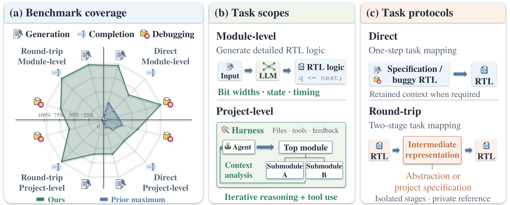
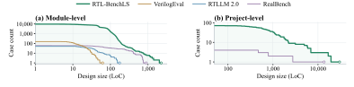

Module-level
Reason about the behavior of a single RTL module: bit widths, state transitions, arithmetic, and timing. Evaluate the implementation against its reference using formal verification.
A Large-Scale Benchmark for
Agentic RTL Reasoning and Implementation
From detailed module logic to complete hardware projects. Evaluate generation, completion, and debugging through direct tasks and a two-stage round-trip protocol.
Benchmark overview
Two scopes, three task types, and two protocols give a broader view of an agent’s hardware design capabilities.

Reason about the behavior of a single RTL module: bit widths, state transitions, arithmetic, and timing. Evaluate the implementation against its reference using formal verification.
Work across interacting modules, interfaces, and project files. An agent inspects context, edits RTL, and uses tools; verification checks the required behavior through testbenches or formal oracles.
Task catalog
Each task has a defined input, expected submission, reference implementation, and verification contract.
Translate a specification into RTL that satisfies the required interfaces and behavior.
Restore an important block or module while preserving the surrounding RTL context.
Repair an RTL mutant or address a functional or nonfunctional repository issue.
| Scope | Task type | Direct | Round-trip |
|---|---|---|---|
| Module-level | Generation | Task 1.1705 cases | Task 1.39,696 cases |
| Module-level | Completion | Task 2.11,296 cases | Task 2.31,669 cases |
| Module-level | Debugging | Task 3.11,564 cases | Task 3.31,648 cases |
| Project-level | Generation | Task 1.250 cases | Task 1.472 cases |
| Project-level | Completion | Task 2.2110 cases | Task 2.4618 cases |
| Project-level | Debugging | Task 3.2827 casesNonfunctional · Functional · Mutant | Task 3.4596 cases |
The 12 task formulations have 14 browser entries because direct project-level debugging lists its three subtypes separately. Counts denote task cases; a parent design can contribute multiple completion or debugging cases.
Evaluation protocols
Both protocols retain a clear boundary between what the evaluated agent receives and what the verification oracle uses.
The input is a specification, retained RTL context, or issue report. The agent produces the required RTL implementation or repair.
For project-level tasks, the agent can inspect files and use tools within the provided workspace.
The stages are isolated. Stage 2 does not receive the clean reference RTL or the Stage 1 conversation.
Design scale
The benchmark includes a broad range of RTL sizes, from compact modules to substantial hardware projects.

Explore the data
Browse cases by task, source group, or slice. Read the agent instructions, specifications, RTL context, reference files, and verification scripts.